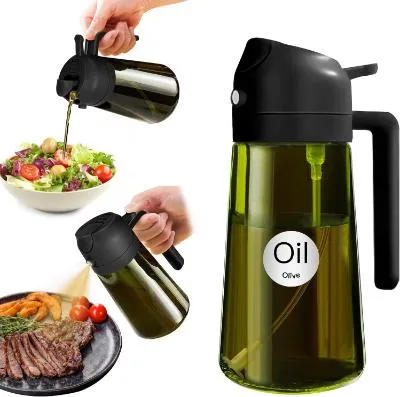
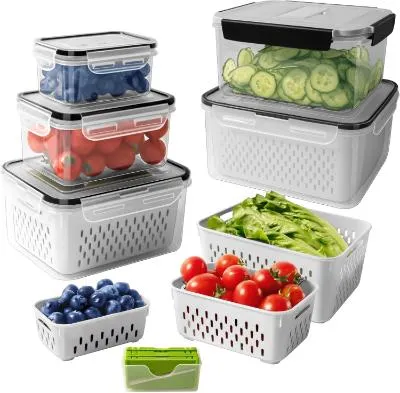
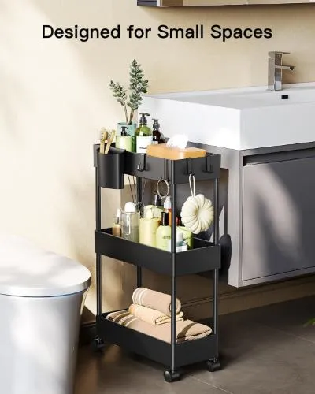
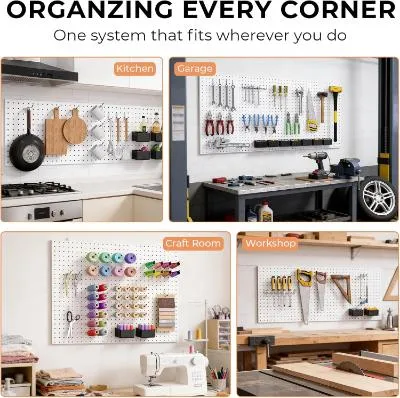
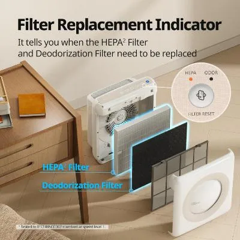
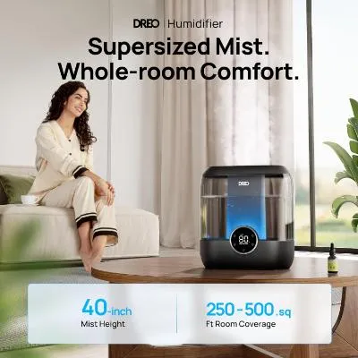
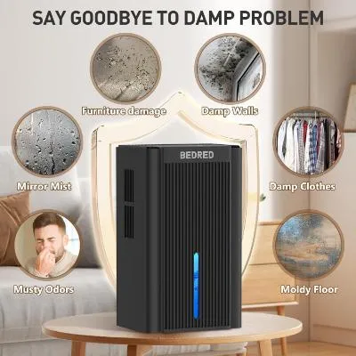

The real reason your kitchen feels harder than it should
A kitchen does not have to be huge to feel easy. And it does not have to be expensive to feel organized. Most of the time, the problem is friction: food takes too long, counters get crowded, supplies are hard to reach, and cleanup feels bigger than the meal.
That is why the right product is not just “a cool kitchen gadget.” The right product removes one specific problem you already deal with. Faster cooking. Cleaner storage. Better air. Less moisture. More usable space.
This guide keeps it practical. No random products. No rejected items. Only products from your actual Home & Kitchen page, connected to the problems they make easier.
Common signs your kitchen setup needs help
- You avoid cooking because the whole process feels like work.
- Leftovers, produce, or meal-prep items get messy fast.
- Cleaning products, small tools, or home supplies are hard to reach.
- The room feels humid, dry, stale, or uncomfortable.
- Small items keep spreading across counters, cabinets, and corners.
What is really happening?
Most kitchen problems come from repeated daily friction. One container without a place. One crowded cabinet. One cooking step that takes too long. One corner that collects supplies. These are small things, but they repeat every day.
The fix is not buying everything. The fix is choosing tools that each solve one clear problem and make the space easier to use.
Use tools that make common meals faster or less annoying.
Give food, tools, and supplies a clear place to go.
Air, moisture, and lighting affect how the home feels every day.
The simple routine that makes sense
Start with the problem you notice most. If cooking takes too long, fix the cooking step first. If the fridge is messy, fix food storage. If the room feels stale or dry, fix air comfort. If cabinets and corners are crowded, fix storage.
This is how the products below are organized: each one has a job. That makes the article more useful for readers and makes the product recommendation feel natural instead of forced.
Products that fit the solution
Instant Pot Duo Mini
If cooking feels like too many steps, a compact multi-cooker can make everyday meals easier. It helps with pressure cooking, slow cooking, steaming, rice, and smaller meals without needing several separate tools.
Best fit: smaller kitchens, quick meals, compact cooking setups, and people who want one tool to handle more jobs.
View Product on Merchant
2-in-1 Oil Sprayer
Pouring oil can get messy fast, especially for air fryers, salads, pans, and quick meals. A sprayer helps control oil without slowing down prep or leaving the counter greasy.
Best fit: air fryer use, salads, quick cooking, and people who want cleaner oil control.
View Product on Merchant
5 PCS Food Storage Containers
A messy fridge makes cooking slower before you even start. Containers with removable colanders help organize produce, rinse items faster, and keep ingredients easier to see.
Best fit: produce storage, meal prep, fridge organization, and people who lose food in cluttered shelves.
View Product on Merchant
Pipishell Slim Storage Cart
Small gaps beside cabinets, laundry areas, bathrooms, or kitchen corners often become wasted space. A slim rolling cart turns those tight spots into reachable storage.
Best fit: narrow spaces, cleaning supplies, snacks, pantry overflow, bathroom items, and laundry products.
View Product on Merchant
INCLY Pegboard Accessories Organizer Kit
Counters and drawers get crowded when small tools do not have a visible place. Pegboard accessories help move tools, garage items, craft supplies, and utility items off surfaces.
Best fit: utility rooms, garages, craft areas, tool corners, and homes that need more vertical storage.
View Product on Merchant
Coway Airmega Air Purifier
Kitchens and living spaces can feel stale from cooking smells, dust, pets, and everyday indoor air. An air purifier supports cleaner-feeling air in bedrooms, offices, and shared home spaces.
Best fit: bedrooms, living rooms, offices, pet homes, and people who want everyday air-cleaning support.
View Product on Merchant
DREO Smart Humidifier 6L
When indoor air feels too dry, comfort drops fast. A larger smart humidifier helps keep a bedroom or home zone more comfortable, especially overnight.
Best fit: dry rooms, bedrooms, overnight comfort routines, and homes that need easier humidity control.
View Product on Merchant
95oz Home Dehumidifier
Some spaces have the opposite problem: too much moisture. A compact dehumidifier can help with bathrooms, closets, basements, bedrooms, and small moisture-prone areas.
Best fit: small rooms, bathrooms, closets, laundry areas, and places that feel damp or humid.
View Product on MerchantFAQ
What kitchen products are actually worth it?
Products that solve a repeated problem: faster cooking, cleaner storage, better access, air comfort, or moisture control.
Should I buy trendy kitchen gadgets?
Only if they fix something you already struggle with. A product that does not solve a real friction point becomes clutter.
What is the best first step?
Pick the problem you notice most: slow cooking, messy fridge, crowded storage, stale air, dry air, or moisture. Then choose the product that matches that exact problem.
Make the kitchen easier to use, not just fuller.
The best home and kitchen products do not just add more things. They remove friction from cooking, storage, cleanup, and comfort so the room feels easier to live in every day.